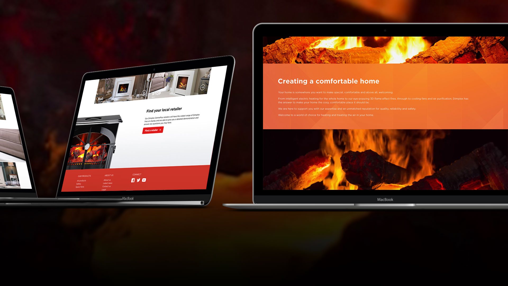

Dimplex required an updated website for their Opti-Myst range of stoves and fireplaces.
A new site was created, based on the existing palette of the Dimplex website, but with the introduction of more brand-specific colours. A combination of static and dynamic assets were used to create a more graphic-heavy site, which thoroughly complimented the brand and the product.
The resulting website was a more customer-friendly browsing experience, with a more comprehensive layout for viewing the product categories.